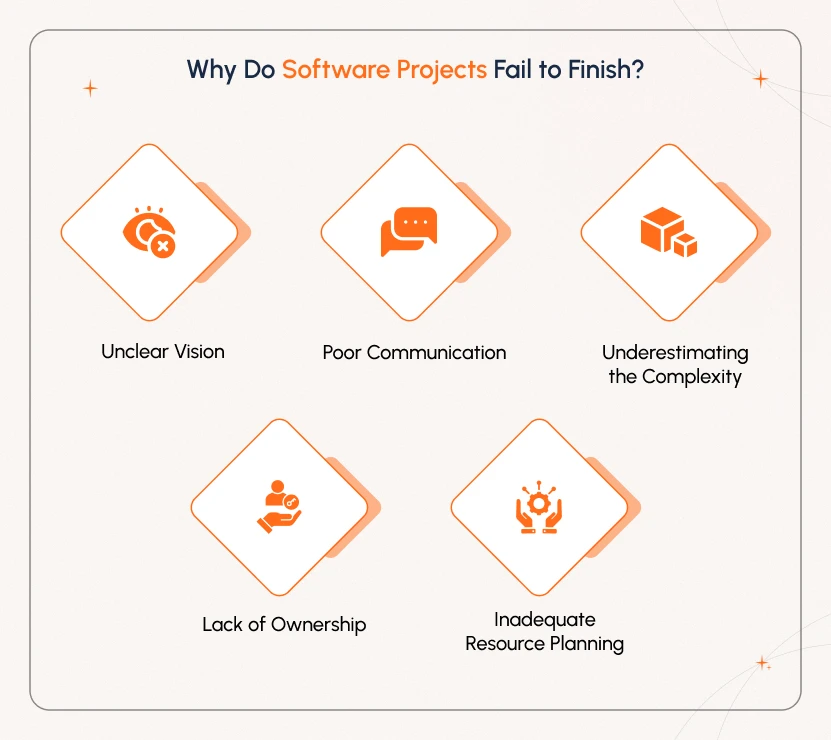
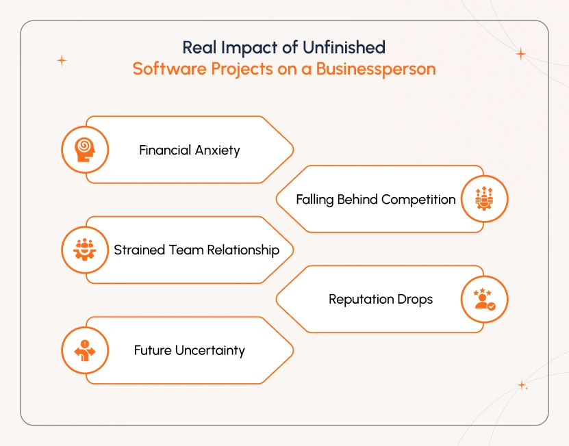
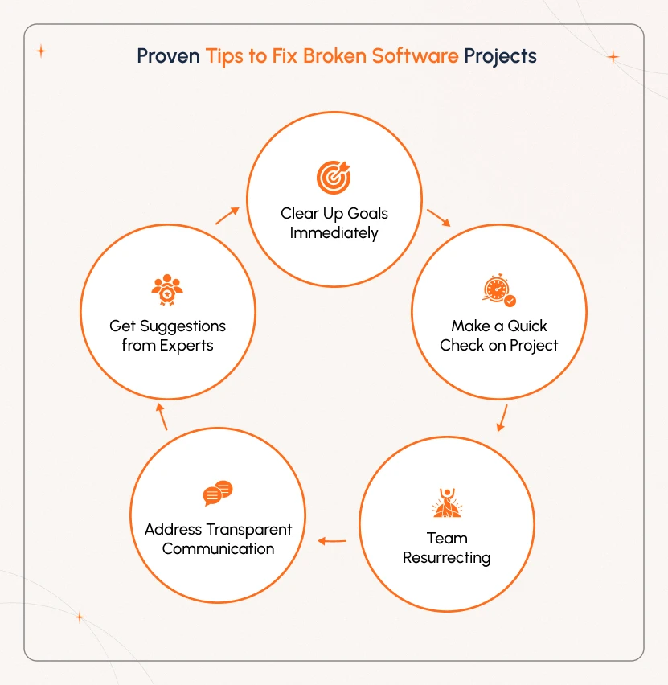
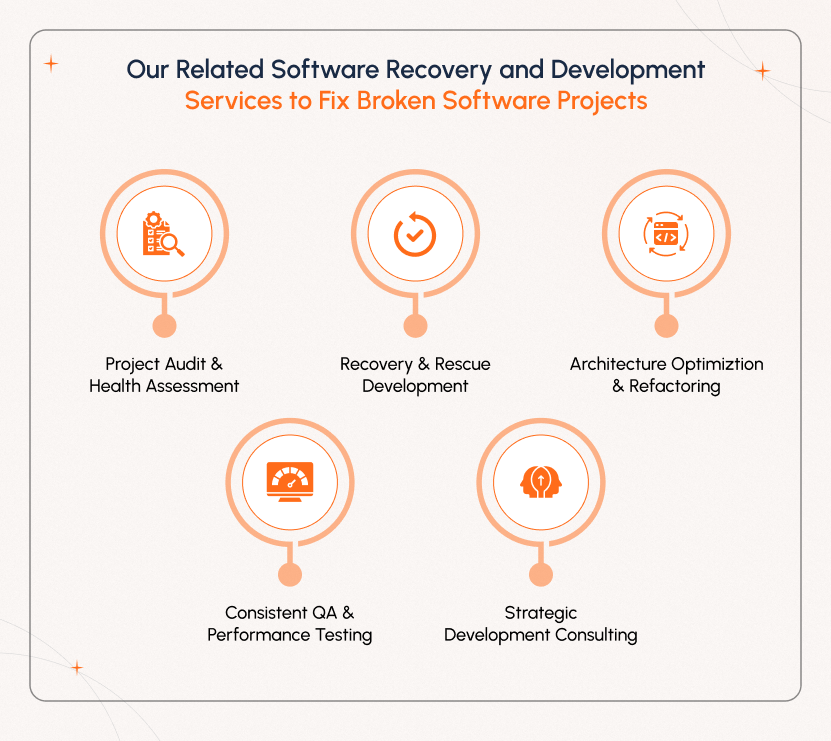

In today’s competitive world, every business dreams of launching flawless software that scales smoothly and delivers better results, competing with other businesses. On the contrary, reality often hits us with a different story. Hearing about missed deadlines, corrupted code, and a misaligned team can turn the tables around. It turns a promising custom software development project into a costly nightmare. When the software fails to perform, it’s not just the product that goes in vain. Instead, the business’s reputation and customer trust can also be lost.
Meanwhile, here’s some good news! A broken project doesn’t mean it’s good for nothing. Businesses with the right strategy, communication clarity, and tech stack can resurrect the project from the dead. In this informative guide, we’ll explore how business leaders can identify red flags prior, regain control, and fix broken software projects and get them back on track.
Why Do Software Projects Fail to Finish?
Witnessing from a business person’s point of view, project failures mostly come from one big mistake. It’s starting a project with a minor, unnoticed flaw that creates a huge impact on the final deployment.

Unclear Vision
If the business objectives or goals keep on
changing or are not communicated clearly, teams will lose their sense of direction.
What actually started as a well-defined project will suddenly turn into hectic work,
which leads to revamping and wasted effort.
Poor Communication
Continuous miscommunication between the
teams will always lead to a delay in app development. Without a proper alignment,
teams will start working on their own path. This will extend the time and lead to
missing deadlines.
Underestimating the Complexity
In recent days, many
projects have failed just because the initial plans are too optimistic. The business
leaders often expect the specific work to be done quickly, ignoring how complex the
technical problem is or how time it actually takes to connect things up.
Lack of Ownership
If no one in the entire team takes
responsibility for the project’s success, even a tiny delay can deliver bigger
problems. At times, team members will hesitate to make decisions. As a result, tasks
are delayed and the progress slows down. Without proper ownership, the project loses
its direction.
Inadequate Resource Planning
Budget
doesn’t meet up with the project needs, employee’s skill gaps, and lack of modern
tools can delay the software development process. It’s possible that even a
well-planned project can fail if the right resources and people aren’t available.
Spot Red Flags Before Your Software Project Slips Away
Usually, software projects don't fail overnight. It actually sends early signals before things get out of hand. Here are the key business-critical signs to keep an eye on.
Progress Feels Busy, Not Productive
Actually, your team
might seem active with daily calls, endless updates and long hours of work, but the
results add nothing. This usually happens when the goals aren’t clear enough or the
project lead isn’t guiding the team effectively.
Shifting Conversations
As a businessperson, you can clearly
notice the positivity drop when the deadlines become uncertain. If your team starts
to say ‘we’ll try’ instead of ‘we will’, this shows that confidence is broken. This
change in communication shows unclear responsibilities and proves that teams are not
completely aligned with each other.
Team Stuck in Crisis Mode
There might be a situation where
you notice the main team members spend most of their time putting off fires instead
of focusing on innovation. It’s a major warning that the project is in danger.
Constant firefighting means the issue hasn’t been solved. This happens due to poor
planning, technical debts, and unclear project goals.
Rising Pressure, Falling Quality
If teams focus more on
quantity than quality, the project starts to drop. Passing on testing, ignoring
documentation, or rushing the features will result in recurring bugs and unstable
builds. This kind of imbalance between quality and pressure is an explicit warning
that the delivery process needs clarity, and not addressing it will lead to project
failure.
Stakeholder Engagement Fades
At times,
once active stakeholders will remain silent and stop asking questions or providing
feedback. This doesn’t mean that everything is under control. It might be a sign of
fatigue. When communication slackens on both sides, it’s a clear warning that the
trust is falling into ashes, and the relationship needs an immediate remedy.
Real Impact of Unfinished Software Projects on a Businessperson
When a software project drags or fails, as a businessperson, we feel the same stress, pressure, and frustration in the forthcoming days. Here are the real problems that a businessperson faces if the result doesn’t favour them.

Financial Anxiety
Witnessing the budget fading away without
smelling success is nerve-wracking. Each and every hour or day of delay feels like
money slipping through fingers. This sets the businessperson constantly thinking
about how long they can sustain the project before it starts rotting other parts of
the business. The frustration of balancing expenses while wishing for a turnaround
keeps them awake at night.
Falling Behind Competition
Knowing that rivals will launch
a similar feature to the market while their project lags behind will be frustrating.
This feels more like running a marathon while carrying a weight, and they constantly
worry that their market relevancy is reducing with every missed deadline.
Strained Team Relationship
If the project drags behind,
tension spreads across teams. Designers and developers were stressed out,
stakeholders kept asking for further updates, and the head of the company feels like
caught in the middle. This will be a difficult time for them, and motivating the
team without losing temper will be a huge hurdle.
Reputation Drops
Every missed opportunity will feel like a
mark against the business’s head. Clients, investors, and even their own team will
start questioning the decisions and find themselves justifying delays constantly.
Future Uncertainty
If one project gets
stuck behind proceeding with new initiatives, innovations will be hindered.
Businesses will hesitate to commit to other projects and take risks, knowing that
unfinished work has already consumed time and energy. This holds up the long-term
growth of a business.
Proven Tips to Fix Broken Software Projects
A failing software project will create stress and development delays for any business models. The following practical tips provide ways to fix unfinished software projects and how to regain control and march forward.

Clear Up Goals Immediately
If you feel like something fishy
is going on in the software development process, act immediately. Revisit the
project’s original objectives. As a businessperson, make sure that every feature and
inclusion aligns with the strategic goals. By re-evaluating project goals and
redefining objectives, remove anything which is not necessary to march forward in
the evolving trend.
Make a Quick Check on Project
Conduct a quick check into
timelines, budgets, and resource allocation. While analyzing this, identify
potential flaws, technical debt, or delayed tasks. Getting a clear idea of what
struggles the project allows businesses to make informed decisions quickly.
Team Resurrecting
Sometimes, it’s better to remind teams
about what exactly their responsibility is. At times, switching roles and including
a few team members who are actually skilled can fuel the engine to move forward.
Explicit accountability will keep teams focused and reduce blaming games.
Address Transparent Communication
Having a short daily or
weekly sprints will keep everyone in teams and stakeholders stay updated. Being
transparent reduces misunderstandings, gains trust, and assists teams in reacting
quickly to possible challenges.
Get Suggestions from Experts
If the internal team isn't
able to spot software development issues, software project rescue companies like
Sparkout can lend you a hand. Getting help from fresh eyes like us can accelerate
problem-solving, and the business can get unbiased recommendations.
By following the above-mentioned solutions, a business can overcome the hurdles and can prevent future software project failures.
Rescue Vs Rebuild: Which is Better to Fix Failing Software Projects
When the software is down, you will be in confusion. Got stuck deciding whether to patch it up or start from scratch. If you’re in a dilemma, then here’s a side-by-side look at both factors to determine which approach is better to resurrect a project.
| Aspect | Rescue (Optimize Existing Software) | Rebuild (Starting from Scratch) |
|---|---|---|
| Time Taken to Implement | Quicker - Revamping the existing software doesn’t take much time | Longer - Designing and deploying a new software will take business hours |
| Investment | Low upfront costs | High upfront investment |
| Risk Factor | Moderate - Underlying architecture issues may persist | High - There’s a high chance for missed opportunities and delays |
| User Impact | Low - User can still continue using the system | High - The transition might disrupt the existing workflow |
| Flexibility | Limited - Can’t change much because the existing one holds back | High - Can build and design freely without any restrictions |
By going through the above table, you can get an idea of picking between the two methodologies. Rescuing is ideal if you need a low software development cost and a quick solution. On the other hand, rebuilding is better for future growth.
When to Replace Your Software Development Company
At times, businesses will face quality issues not because of the idea they share, but due to a mismatched execution. Similarly, if your current software developer partner continuously misses deadlines or fails to keep up with your vision, then it’s time to replace them with someone better. Selecting the right agency will make all the difference. They implement agile custom development strategies to make you meet deadlines.
This is where we make our move. We at Sparkout specialize in turning struggling projects into successful software solutions that align with business goals. By offering clear communication and deep understanding of the modern software troubleshooting and debugging, we assist your teams to regain momentum and achieve better results without frustrations.
Our Related Software Recovery and Development Services to Fix Broken Software Projects
When the project is on the verge of complete failure, relying on a trusted support will make the difference. At Sparkout, we provide end-to-end software project recovery services specifically designed to get your software back on track.

Project Audit & Health Assessment
Being a leading app recovery and development service, we dive deep into your existing projects to pinpoint flaws, workflow gaps, and hidden risks. Instead of initiating just a technical review, we do analyze budgets, timelines, and team dynamics to provide a transparent roadmap for recovery.
Recovery & Rescue Development
Stalled or failing software projects immediately require standard actions. This is where our team steps in to stabilize the development process, secure broken components, and implement actions that prevent recurring software project management issues.
Architecture Optimiztion & Refactoring
Outdated architecture, messy code or legacy systems, we assist in cleaning and redesigning them to make the software robust and reliable to maintain. In this way, we fix broken software code, and your falling software can handle growth, stay reliable, and adapt accordingly to the current trends.
Consistent QA & Performance Testing
At Sparkout, we do implement rigorous quality assurance and automated testing to detect potential errors before they impact the target users. From functionality to security, we ensure the product meets with highest standards.
Strategic Development Consulting
We don’t just write code. Instead, we provide practical guidance for selecting the right technology and align the team with the business goals. Meanwhile, our consultants work closely with your team and ensure each and every development decision helps to achieve the business goals.
How Sparkout Helps Clients Fix Their Incomplete Software Projects
When the software projects miss critical milestones, the frustration isn’t just technical. It impacts the whole business. At Sparkout, we bring in transparency and straightforward direction, working closely with your team to understand what exactly causes the software failure. Our strategic approach goes beyond quick fixes. Our software project rescue company aims to uncover the potential software development issues that are slowing down the process. This creates a crisp and clear plan that makes the recovery sustainable.
After the flaws are spotted out, we roll up our sleeves and begun to take action immediately, guiding the project back into the track. From optimizing the workflow to reinforcing team collaboration, we focus on making the software functional, reliable, and will deliver real business value. Our primary goal is to turn the incomplete projects into a fully operational solutions without sacrificing the quality.
Turning Broken Software Projects Into Functional Success
Many organizations in today's world find themselves stuck with broken software projects. These situations often arise from rushed timelines, improper requirements, and misaligned development efforts. Over these years, we’ve raised our hands to clients in rescuing variety of software projects. This includes e-commerce platforms that were left mid-development, enterprise tools that struggle to scale, and SaaS apps that were never been to full-scale development. We analyze the root cause and help our clients realize what went wrong and draft a clear path for sustainable growth.
At Sparkout, our unique approach combines technical expertise with practical problem-solving. With distinct capabilities, we implement development practices that ensure the project is completed successfully. Our delivery means more than functionality. It’s streamlined, maintainable, and optimized, providing a solution that saves significant time, effort, and stress.
Final Thoughts!
Each and every software project deserves a second chance. Actually, it’s never really ‘broken’ beyond repair if you have the right team and tools that have your back. With the blend of modern technical insight, proper recovery plans, and a perfect team that knows how to rebuild with confidence, make a strong comeback.
Beyond fixing only the flaws, partnering with leading software project rescuing firms like Sparkout will reignite the project’s full potential. So, if you’re struggling to fix the broken software by yourself, then it’s time to hold hands with a reliable unfinished project consulting service that’s built to recover, rebuild, and relaunch your project’s vision better than before.